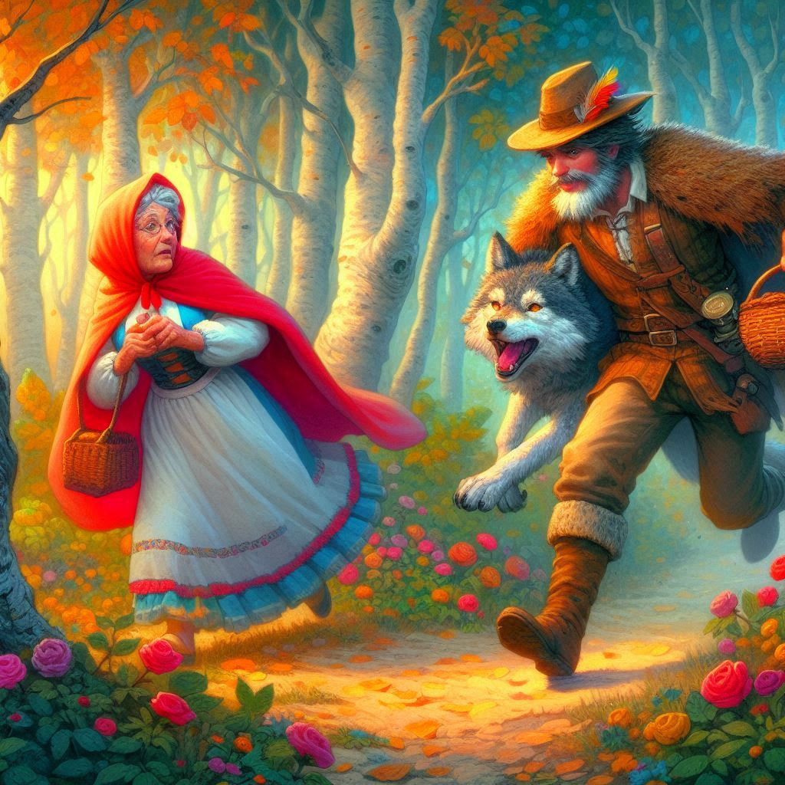

Había una vez una niña llamada Caperucita Roja, quien vivía en un pequeño pueblo al borde del bosque. Un día, su madre le pidió que llevara una cesta de comida a su abuela, que vivía en una cabaña al otro lado del bosque. Antes de salir, su madre le advirtió: "Ve directamente a casa de tu abuela y no hables con extraños". Caperucita Roja prometió obedecer y se adentró en el bosque.
Mientras caminaba, se encontró con un lobo astuto que, al verla, ideó un plan. Fingiendo ser amigable, le preguntó: "¿A dónde vas, Caperucita Roja?". Sin pensar en el peligro, ella le contó que iba a ver a su abuela. El lobo, rápido, le sugirió que recogiera algunas flores para llevarle.

Caperucita Roja, olvidando la advertencia de su madre, se detuvo a recoger flores, mientras el lobo corría rápidamente a la cabaña de la abuela. Al llegar, engañó a la anciana, se la comió de un bocado y se disfrazó con su ropa, metiéndose en la cama para esperar a Caperucita.

Poco después, la niña llegó a la cabaña y, al ver a su "abuela" diferente, preguntó:
—Abuela, ¡qué ojos tan grandes tienes!
—Son para verte mejor, querida —respondió el lobo con voz ronca.
—Abuela, ¡qué orejas tan grandes tienes!
—Son para oírte mejor.
—Abuela, ¡qué dientes tan grandes tienes!
—¡Son para comerte mejor! —gritó el lobo, saltando de la cama.
Pero en ese momento, un cazador que pasaba por allí escuchó los gritos, entró rápidamente en la cabaña y ahuyentó al lobo. Luego, rescató a la abuela, que aún estaba viva dentro del vientre del lobo. Caperucita Roja y su abuela agradecieron al cazador y aprendieron una valiosa lección: siempre escuchar a los que te cuidan y nunca confiar en extraños. Y así, vivieron felices y seguras, sin volver a tener problemas con lobos astutos en el bosque.
